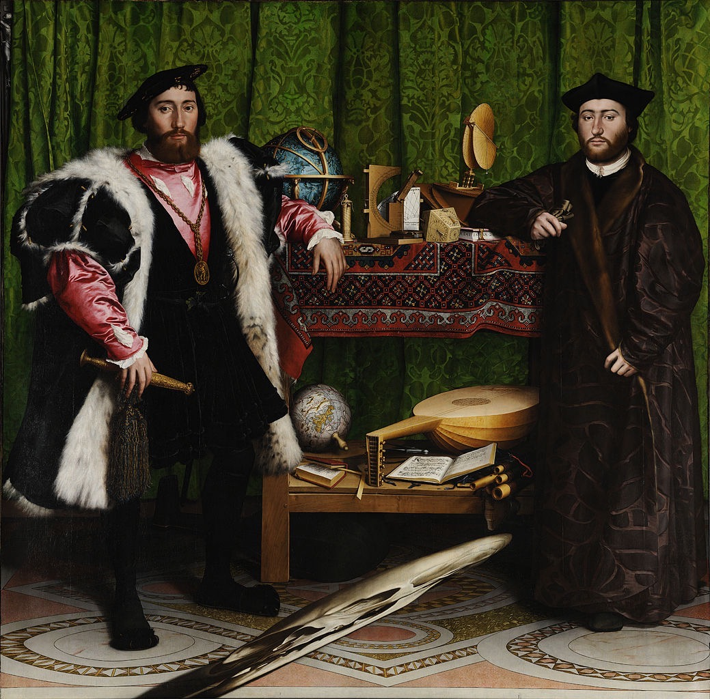

「人肉照相机」小荷尔拜因
- link
- 西方艺术课
小荷尔拜因（1497-1543）是真正意义上的「人肉照相机」 ，他的肖像画栩栩如生，无人能及，可以说肖像画这件事在小荷尔拜因身上彻底「结案」。在他之前有很多艺术家都致力于肖像画，丢勒、韦登、扬·凡·艾克等等，可谓各领风骚数十年。但他们都是全科画家，而小荷尔拜因一生都专注于肖像画，并且将肖像画推向了写实的顶峰。
小汉斯·荷尔拜因（Hans Holbein the Younger）之所以加了「小」，是因为他的父亲也是一位画家，史称老汉斯·荷尔拜因。小荷尔拜因出生于德国南部的奥格斯堡，从小跟随父亲学画，成年后去了当时北方的文化中心巴塞尔，后来又移居英国，并在那儿度过了大半生。小荷尔拜因是16世纪德国最后一位著名的画家，在英国画坛上也有广泛的影响，为后来的英国绘画发展奠定了基础。
小荷尔拜因的发展道路，可以说是当时历史的缩影。在他向变成一流大师的方向努力奋进时，宗教改革的动荡使他的希望成为泡影。马丁路德主导的宗教改革，在反对教皇统治的同时，诞生了新教，却有了矫枉过正的趋势，对《圣经》中的教义极为遵守。而其中最重要的一点就是「不能拜偶像」，不仅雕塑不能雕人像，绘画中也严令禁止画神圣形象，导致了欧洲历史上第一次画家「下岗」热潮，小荷尔拜因也不能例外。
小荷尔拜因的肖像画风格细腻，观察深入，讲求百分之百写实，一个细节都不放过。最有趣的是，他绝不美化对象，画中毫无戏剧性的渲染。那时候的王公贵族，尤其是英国王室，其实基因并不好，身材也比较矮小，小荷尔拜因都照实画出来。例如在「达康书记」理查德·萨尔斯维尔爵士的肖像画中，人物脸上有两个伤疤都被完整地保留下来，可见他笔下的肖像没有任何掩饰。
小荷尔拜因作为「人肉照相机」的另一个佐证，是将观画人看画的角度都考虑在内。他的代表作《大使们》，画的是来英国访问的法国公使。画面整体分为三层，第一层是地球仪之类的物件，代表着天堂；第二层是乐器，代表着现世生活，第三层代表地狱，小荷尔拜因竟然画了一个变了形的骷髅。而骷髅之所以变形，就是考虑到这幅画挂在楼梯上方，自下而上仰视的角度下，刚刚好能看到形态正常的骷髅造型。
法国大师们: 